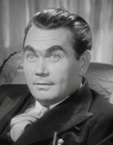

Tuesday, February the 21st, 2006
back to: title, date or indexes
Rainer Werner Ringbinder did not invent the ring-binder, but he claimed to have done so. He also tried to take credit for being the first person on earth to devise staplers, hole-punches, treasury tags, pencil sharpeners, and all sorts of other stationery items which, alas, are falling into desuetude as administrators and office workers spend more and more time staring at screens and less and less time fiddling about with tangible things.

Oskar Homolka
Rainer Werner Ringbinder was a heavy-set man with cow-like eyes, who looked a little like Oskar Homolka, the Viennese actor who played Verloc in Alfred Hitchcock's Sabotage (1936), an adaptation of Joseph Conrad's The Secret Agent (1907). Confusingly, Hitchcock made a film called Secret Agent (also 1936), which was nothing to do with Conrad's novel, and also Saboteur (1942), which was nothing to do with Sabotage. Secret Agent (film, not book) starred John Gielgud, Peter Lorre, and Percy Marchmont, none of whom looked like Rainer Werner Ringbinder at all.
Peter Lorre's daughter Catherine nearly fell victim to the so-called “Hillside Stranglers”, Angelo Buono and Kenneth Bianchi, but was left unharmed when the fiends realised that her father's status as a film star would mean unwelcome publicity for their homicidal frenzy. It goes to show that having the right name can get you out of all sorts of trouble, even when it isn't the right name at all. In St Petersburg in 1918, the writer William Gerhardie was about to be set upon by a tangle of angry Bolsheviks when one of them recognised him and pointed out to his pals that it was “Geerhardi, Geerhardi”. Mistaking the foppish young Englishman for Kier Hardie, founder of the Labour Party and socialist saint, the revolutionaries shook Gerhardie by the hand instead of tearing him limb from limb.
Gerhardie's first novel was Futility (1922), and this would have made an apposite title for a biography of Rainer Werner Ringbinder, were anyone foolish enough to write one. A man like Ringbinder does not have “friends”, exactly, but the closest he came to one was his acquaintance Pryce Montmarch (not to be confused with Percy Marchmont), who said: “Everything about Rainer Werner was futile, from his cradle to his grave. He was the most hopelessly unnecessary person I ever met. Why he pretended to have invented many standard items of stationery is anybody's guess. The infuriating thing is that he had a first class intellect, and he squandered it on futility.”
And so the seasons turn and the globe spins on its axis, and so dust settles on the past, and on tangible things, and still stars blaze with light in the boundless firmament.
Hooting Yard on the Air, March the 1st, 2006 : “Bucephalus and the Cephalopods in the Bosphorus” (starts around 07:13)